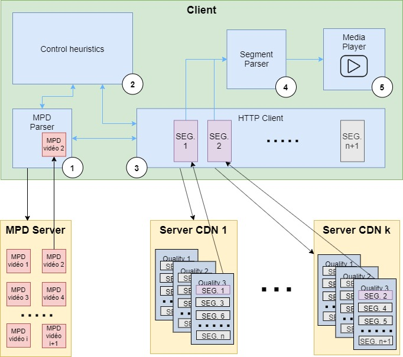

MPEG-DASH

Dynamic Adaptative Streaming over HTTP, or MPEG-DASH is an adaptative streaming for media content on internet. It is an international standard since November 2011. It has been developped by the collaboration of almost a dozen organizations. It is based on the derivation of content in several versions having distinct quality and characteristics and then cut into short segments. A manifest file in xml format (the Media Presentation Description (MPD)) gives the client the information necessary to request each segment individually from conventional HTTP web servers. The behavior of the client isn’t normalized, this way the provider of the service can adapt it to its needs. In practice, the choice of an adaptative bitrate streaming is ever done, so the selection of each segment is done by the client while the content is being played by choosing the maximum bit rate that avoids stalls or rebuffering events. This method adapts the stream to the network conditions when changing, and provides high quality streaming. The use of HTTP makes possible to rely on the existing web infrastructure and the existing network libraries on devices connected to the Internet. The main advantage of using MPEG-DASH is the quality it provides, while the main disadvantage is that it is not natively supported by some browsers and devices like IE<11 or iOS.

The protocol stack of MPEG-DASH can be divided into two possibilities : one connected and one not connected. The network layer is the same for both possibilities : IP. It is on the transport layer that the protocol stack splits in two : - The connected version uses TCP as transport layer, followed by TLS 1.2 for the security layer and finally HTTP/2 for the application layer. - The non-connected version uses UD¨P as transport layer, combined with QUIC which extends itself from the transport layer to the application layer, which is shared with HTTP/2 API.

Media Presentation Description (or MDP) is an XML document containing information about the data segments. It is divided into multiple parts : - A period ID : determines the type of information (audio, video, subtitle) - An adaptation set : determines the quality and bitrate of the segment - A representation : contains all the segment information - A segment information : contains the URL of each segment and provides more information about the segment in itself (beginning time, end time, …) With a MPD, it is easy to select the segment wanted, with the quality/bitrate/… needed.

Playback of content via MPEG-DASH is as follows. First, the client requests the Media Presentation Description (MPD) associated with the desired content from the MPD server and receives it. This mpd is parsed by the client and provides it with the data necessary for the acquisition and processing of the segments. The HTTP client then begins to request one by one the segments from the servers concerned, taking into account the network conditions for the choice of bit rate and quality in order to get the higher quality and bit rate possible avoiding stalls or rebuffering. The segments are parsed and then played by the player. Everything is supervised by a heuristic control. An important point is that the following segments are requested, received and processed while playing the previous ones. This allows to display the content without interruption and to adapt in real time to the network.
Bon courage pour cette partie.
0. Prerequisites
Blabla